Første del
De rå håndgreb
Klippene i denne bin er her kun for at øve på. De ender ikke i noget, I skal vise frem, så det gør ikke noget, hvis I roder. Pointen er at få hånden ind i det, før vi bygger noget rigtigt om lidt.
Vi lærer det i en bestemt rækkefølge: først at få et klip ned og markere det rigtigt, så at flytte rundt på flere klip, og til sidst en hurtigere måde at tilføje endnu et klip på. Den sidste del giver først mening, når der allerede er noget på timelinen, og derfor kommer den sidst.
-
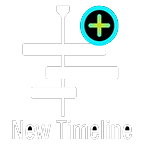
Opret en ny timelineÅbn binnen Del 1 – Øvelsesklip i Media Pool. Tryk Ctrl + N (Windows) eller Cmd + N (Mac) for at lave en ny, tom timeline at øve på.
-
Forhåndsvis et klip
Før musen hen over et af klippene i binnen, uden at klikke. Klippet spiller live i source viewer, mens musen bevæger sig hen over det. Det kaldes at scrubbe, og det er den hurtigste måde at få et førstehåndsindtryk af et klip på.
-
Åbn klippet ordentligt
Dobbeltklik på klippet. Nu ligger det fast i source viewer, og I kan bruge J, K og L til at spille det: L fremad, K stop, J baglæns. Flere tryk på L eller J giver højere fart.
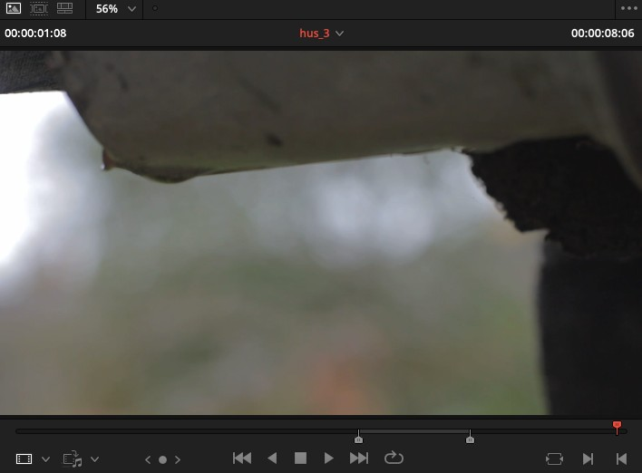
Klippet hus_3 åbnet i source viewer. -
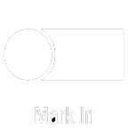
Marker det rigtige stykkeFind stedet, hvor klippet skal starte, og tryk I for at sætte et startpunkt. Spil videre til det skal slutte, og tryk O for slutpunktet. Det markerede stykke er det, der lander på timelinen, ikke resten af klippet.
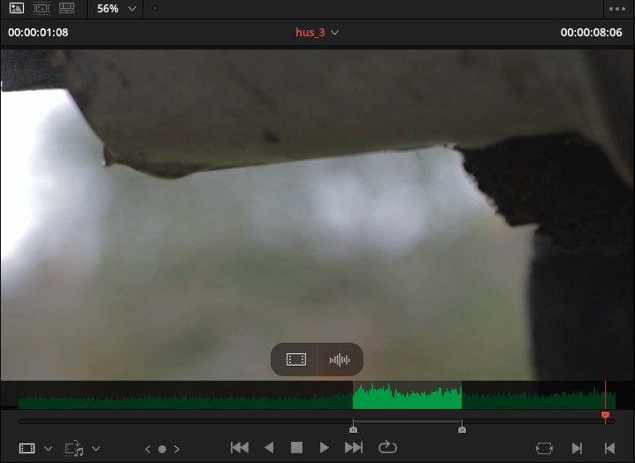
Det grønne felt i bunden er stykket mellem jeres I og O. -
Træk klippet ned på timelinen
Klik midt i source viewer, og træk ned på timelinen. Det markerede stykke lander der, hvor I slipper det.
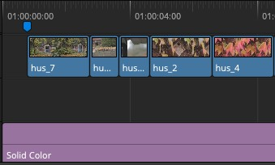
Sådan ser det ud, når I har gjort det et par gange. Det lyserøde spor nedenunder skal I ikke røre, det bruges senere. Et fif: tryk Q for at skifte frem og tilbage mellem source viewer og timeline viewer. Det er hurtigere end at klikke, når I skal se det næste klip og kigge på resultatet på timelinen i samme ombæring.
-
Gentag med et par klip mere
Gør det samme med to eller tre andre klip fra binnen: scrub, dobbeltklik, JKL, I og O, træk ned. I skal ikke tænke over rækkefølgen endnu, den retter vi i næste trin.
-
Byt om på rækkefølgen
Marker et klip på timelinen, og tryk Shift + Ctrl + , (Windows) eller Shift + Cmd + , (Mac) for at bytte det med klippet før. Byt med klippet efter ved at bruge . i stedet for ,. Det er den hurtigste måde at flytte rundt på, uden at trække og risikere at lave et hul.
-
Tilføj et mere med Append
Nu hvor der allerede ligger noget, kan I bruge en hurtigere vej: åbn et nyt klip i source viewer, marker I og O, og tryk F12, eller gå til Timeline → Append at End. Klippet lægger sig automatisk efter det sidste, uden at I skal ramme det rigtige sted med musen.
Samme sted findes Insert og Overwrite. I skal ikke lære dem udenad nu, bare vide at de findes, hvis I en dag har brug for at lægge et klip et andet sted end til sidst.
-
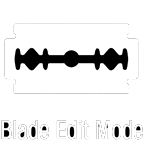
Værktøjerne over timelinenOver timelinen sidder en lille værktøjslinje. I skal kende tre af dem: Selection (A) er den, I har brugt hele tiden, til at vælge og flytte klip. Trim (T) bruges til at trimme et klips kant uden at flytte selve klippet. Blade (B) skærer et klip over der, hvor I klikker.
Der findes også et fjerde værktøj, Dynamic Trim. Det er I ikke med i dag, det er lidt for meget på en gang, når JKL allerede fylder.
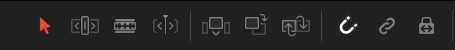
De tre til venstre er dem, I skal kende. Læg mærke til magnet- og kæde-ikonerne til højre, I møder dem igen om lidt. -
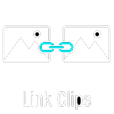
Link, unlink og snapKlip med både lyd og billede er som udgangspunkt linket: flytter I det ene, følger det andet med. Vil I flytte kun lyden eller kun billedet, højreklikker I klippet og vælger Unlink.
Snap (genvej N) gør, at klip snapper til hinanden, når I trækker dem tæt sammen, så I ikke efterlader et hul uden at opdage det. Prøv at slå den fra og til, mens I flytter et klip.
Begge ikoner sidder i samme værktøjslinje som Selection, Trim og Blade ovenfor, helt ude til højre.
-
Zoom ind og ud af timelinen
Hold Alt (Windows) eller Option (Mac) nede og brug musehjulet til at zoome ind og ud, centreret om playheadet. Er I zoomet for langt ind eller ud til at finde rundt, trykker Shift + Z jer tilbage til at se hele timelinen på en gang.
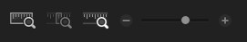
Samme sted findes en skyder, hvis I foretrækker at trække frem for at bruge musehjulet.
JKL reagerer ikke
Klik først på selve billedet i source viewer eller timelinen, så tastaturet ved, hvilket vindue det skal styre. Det er en almindelig faldgrube: markøren kan stå i et tekstfelt eller et andet panel uden at I kan se det.
Anden del
Genskab filmens åbning
Byg selv, med facit som støtteNu bruger vi det, I lige har lært, på noget rigtigt: åbningen af HP's egen film, Hund på efterårstur. I timelinen PUZZLE er de første cirka 20 sekunder tomme. 15 klip plus lyd er fjernet. Jeres opgave er at lægge dem tilbage.
I skal ikke blive færdige. Det er en øvelse i at komme i gang med at lægge rigtige optagelser ned på en rigtig timeline, ikke en test.
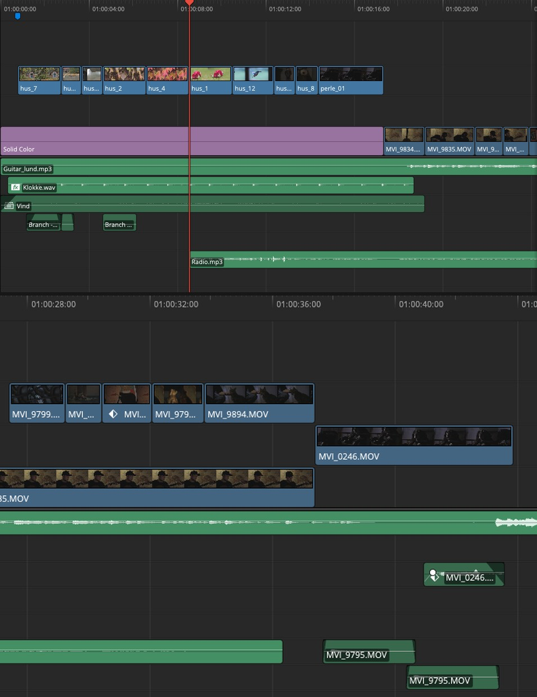
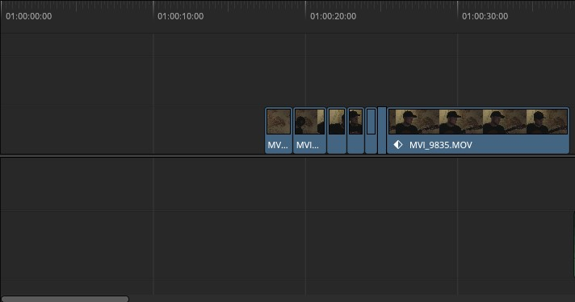
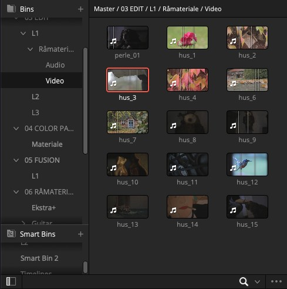
-
Åbn PUZZLE-timelinen
Find den i binnen L1 → Timelines. Spil FACIT-timelinen igennem en gang først, så I ved hvad I bygger hen imod.
-
Byg fra starten
Gå til Råmateriale → Video. Brug det, I lærte i Del 1: scrub jer igennem klippene, åbn dem i source viewer, brug JKL, sæt I og O, og træk dem ned i den rigtige rækkefølge, sammenlignet med FACIT.
-
Brug swap, hvis rækkefølgen driller
Ligger to klip forkert i forhold til hinanden, er det hurtigere at bruge swap-genvejen fra Del 1 end at trække dem forfra igen.
Vi når ikke igennem alle 15 klip
Helt i orden. Byg så langt I kan, og gå videre, når vi siger til. Det vigtige er at have prøvet håndgrebene på rigtigt materiale, ikke at nå i mål.